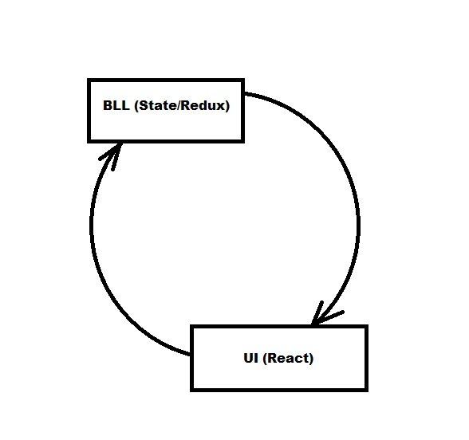
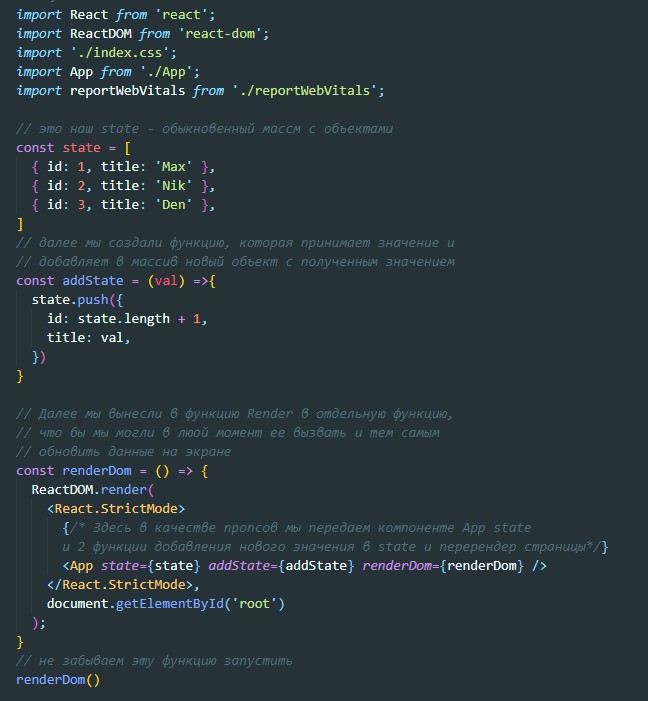
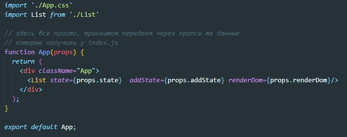
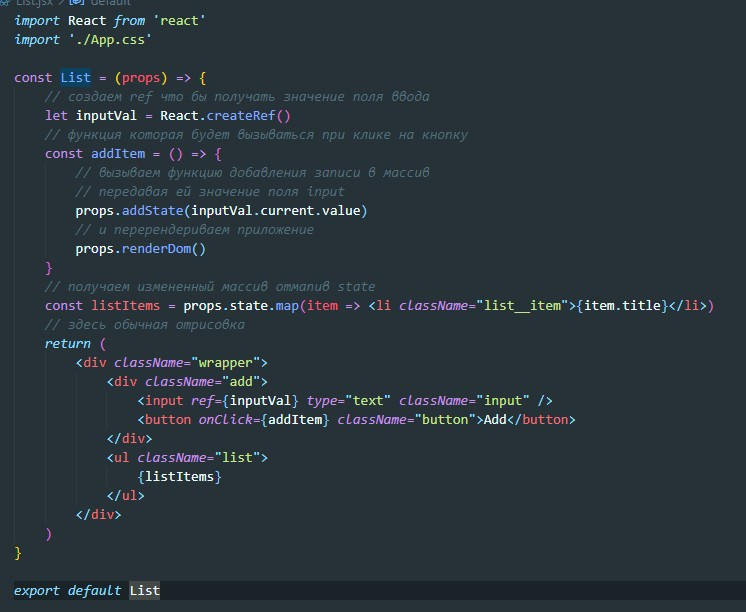
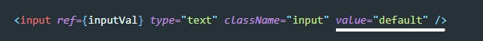
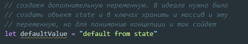
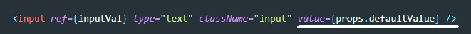
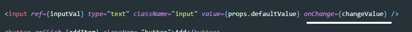
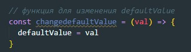
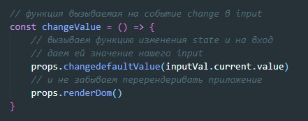

Flux - это принцип, согласно которому изменение в UI происходит ТОЛЬКО после изменения в State. Схематически это выглядит вот так:
Круговорот происходит ТОЛЬКО в одном направлении. Что здесь происходит? Допустим в BLL (Business logic layer) у нас хранится какой-то state (например - это массив объектов). Этот state через props попадает в UI (user interface) и отрисовывается в компоненте. Теперь представим что нам понадобилось изменить данные (добавить еще один пост или комментарий). Мы вводим текст в поле ввода и тем самым мы изменяем UI не изменяя state, а согласно Flux сначала мы должны изменить state и только потом изменять UI. Но как нам изменять state не вводя текста в поле ввода? Как тут быть?
Для того что бы разобраться рассмотрим пример:
У нас есть три файла:
Рассмотрим каждый из них, начнем с index.js
Теперь рассмотрим файл App.js
И наконец смотрим файл List.jsx
Наше приложение работает не по принципу Flux, так как вводя в поле input текст мы меняем UI без изменения state. Для того что бы запретить ввод текст в input добавим ему атрибут value и установим в нем значение по умолчанию
Теперь если мы попытаемся ввести в input какое-либо значение у нас ничего не выйдет. Теперь надо сделать так, что бы значение по умолчанию в input бралось из state. Для этого в файле index.js создадим переменную и протянем ее через props до компоненты List.jsx
Теперь через props тянем эту переменную до List.jsx
После этого у input создаем обработчик события onChange. Это событие будет срабатывать при каждой попытке ввода текста и не важно будет ли текст меняться. Пока нам это не важно. Это событие будет вызывать функцию - changeValue
Теперь в файле index.js (там где у нас state) создаем функцию которая будет изменять нашу переменную:
Так же через пропсы протягиваем эту функцию до List.js и вызываем ее в функции changeValue
Подытожим что тут происходит. Мы пытаемся вводить данные в input, но отображение у нас запрещено так как стоит значение по умолчанию. Это значение мы получаем из state. Мы обрабатываем событие попытки ввода текста и вместо того что бы отрисовать введенные данные мы сначала их посылаем в state и только затем перерендериваем введенное значение. и только так у нас выполняются принцип FLUX. Сначала изменение в state и только затем рендер в UI. Мы запускаем FLUX круговорот для каждого введенного символа.